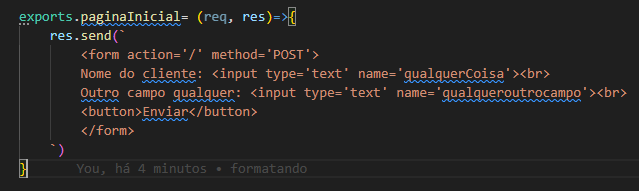

Rotas(router)
exemplo de rotas..
app.get('/testes/:idUsuarios',(req, res)=>{
console.log(req.params);
res.send('teste');
})
Mas se fomos criando esta forma de rota ira ocupar muito espaço no codigo, e para resulmir as rotas do site
existe uma propriedade do proprio express para resulmir as rotas de forma organizada.
Routers
Arquivo routes.js
Primeiro passo é importar o express e o router para o arquivo
const express = require('express');carrega o express
const route = express.Router();var para utilizar o router
O Router será responsavel pelas rotas, ele será encarregado de ver a rota e chamar o
Controller para decidir qual viwer ou como modo irá ultilizar
Controller
Arquivo homeController.js(Estará dendo da pasta controllers)
